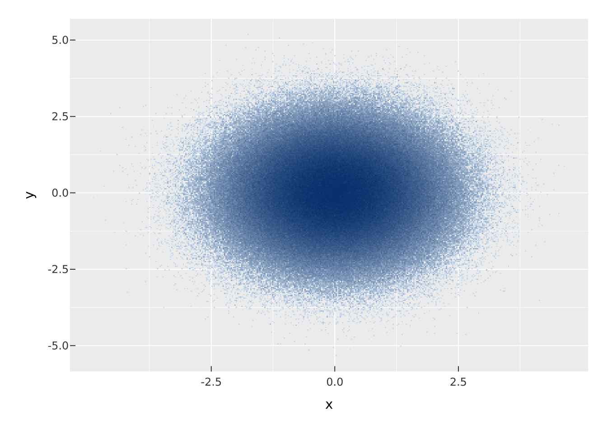
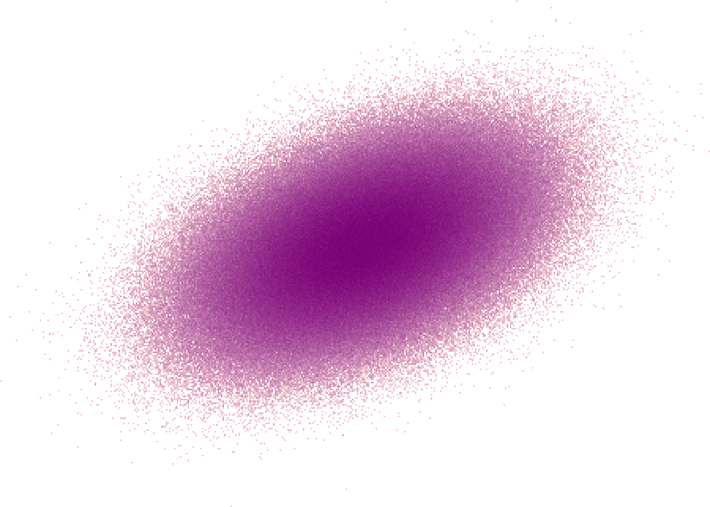

set.seed(1)
n <- 1e6
df <- data.frame(
x = rnorm(n),
y = rnorm(n) * 0.5 + rnorm(n)
)
vplot(df) |>
mark_datashade(x = x, y = y)
Two things make plotting slow at scale: computing the layout, and drawing one graphical object per data point. The vellum ecosystem attacks both. The scene graph, layout, and rendering run in a Rust engine rather than in R, and for the case where the data has more points than the screen has pixels, datashade() aggregates the data into an image before anything is drawn.
In a grid-based stack, a plot’s display list is replayed on every resize, text has to be measured against whatever device is current, and each point is a grob the engine walks at draw time. vellum moves that work down into Rust: metrics are available at construction time, layout is a single explicit pass, and one render walk emits the chosen backend. The consequence for performance is that the R-side cost of a plot is building the spec, which is cheap; the drawing cost is paid once, in compiled code.
That handles moderately large plots well. But no amount of engine speed helps if the plot asks the renderer to draw two million individual circles into an SVG: the file alone would be enormous, and most of those marks would land on the same pixel. That is the problem datashade() solves.
datashade() bins points into a grid the size of the output image, counts how many land in each cell, and colours the cells by density. It returns a single raster, one image, instead of millions of marks. The binning is a one-pass aggregation in Rust, so the cost scales with the number of pixels, not the number of points. Ten thousand points and ten million points cost almost the same to draw, because the output is the same-sized image either way.
In vellumplot, mark_datashade() is a mark like any other. Here are a million points, drawn as a density field:
set.seed(1)
n <- 1e6
df <- data.frame(
x = rnorm(n),
y = rnorm(n) * 0.5 + rnorm(n)
)
vplot(df) |>
mark_datashade(x = x, y = y)
mark_datashade() takes width and height (the aggregation grid, default 400 × 300), a colors ramp, and how, which controls how counts map to colour. The default how = "eq_hist" equalises the histogram so that a few very dense cells do not wash out the rest of the structure.
The same aggregation is available in vellum as datashade(), which returns a raster_grob you place in a scene yourself. Use this when you are building a bespoke visual rather than a grammar plot:
set.seed(1)
n <- 1e6
x <- rnorm(n)
y <- x * 0.5 + rnorm(n)
vl_scene(6, 4.5, bg = "white") |>
push(vl_viewport(xscale = range(x), yscale = range(y))) |>
draw(datashade(x, y, width = 450, height = 300,
colors = c("#fde0dd", "#7a0177")))
Because datashade() bins over xlim × ylim (defaulting to the data range), you draw it inside a viewport whose xscale/yscale match those limits so the image lines up with axes you add around it.
how decides how cell counts become colour, and it is the knob that most changes what you see:
"eq_hist" (default): histogram equalisation; best for revealing structure across a wide range of densities."log": log of the count; a gentler compression than equalisation."cbrt": cube root; gentler still."linear": raw counts; only useful when density is fairly uniform.colors is any vector of colours forming the ramp from sparse to dense, and weight lets you accumulate a summed quantity per cell instead of a plain count, a weighted density.
# emphasise the tails with log scaling, custom ramp
vplot(df) |>
mark_datashade(x = x, y = y, how = "log",
colors = c("#f7fbff", "#08306b"))The rule of thumb is the pixel count. If your scatter has more points than the plot has pixels, tens of thousands and up, overplotting means most marks are invisible anyway, and datashade() shows the density they were hiding while rendering in constant time. Below that, a plain mark_point() is fine and keeps every point individually addressable (which matters for interactivity; a datashaded image is one raster, not a thousand hoverable points).
The format you render to interacts with data size. A raster target (.png) is a fixed-size grid of pixels regardless of how much data went into it. A vector target (.svg, .pdf) stores every mark as an element, so a half-million-point scatter produces a half-million-element file. For large data, prefer raster output, or datashade first so that even the vector output is a single embedded image. See one scene, three outputs for how the same spec reaches each format.
vellum ships a couple of tools for when a plot is larger or slower than you expect:
why_size(s) # explain what is driving a scene's rendered size
vl_clear_render_cache() # drop cached render stateFor scenes with an expensive sub-tree that is drawn repeatedly, a viewport can cache its rendered content with vl_viewport(..., cache = TRUE), so the work is done once and reused.
datashade() / mark_datashade() render arbitrarily many points in time proportional to the image size, by aggregating to a density raster before drawing.how and colors shape how density reads; weight gives weighted densities.